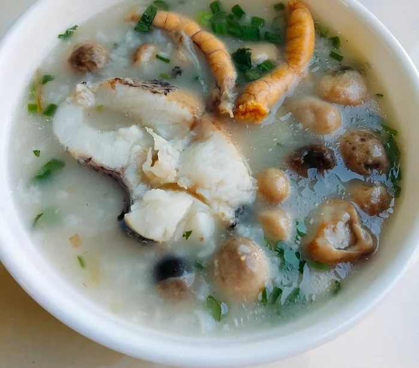
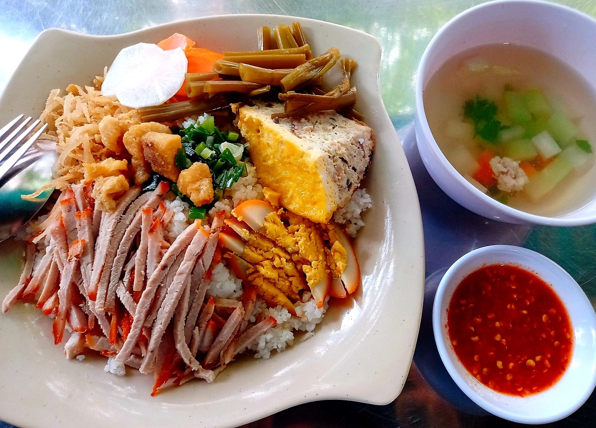

Tinh Hoa Đồng Bằng
Danh sách 20 món ăn đặc sắc nhất của miền Tây Nam Bộ — được yêu thích và nổi tiếng khắp cả nước.
 #01
Đặc sản
#01
Đặc sản
Lẩu Mắm
Nấu từ các loại mắm đặc sản như mắm cá sặc hoặc mắm cá linh, mang hương vị đậm đà, thơm nồng..
 #02
Truyền thống
#02
Truyền thống
Cá Kho Tộ
Các loại cá đồng hoặc cá da trơn (như cá lóc, cá basa, cá bông lau...) kho trong thố đất với nước màu dừa, tiêu và nước mắm đậm đà và béo ngậy.
 #03
Phổ biến
#03
Phổ biến
Bánh Xèo Miền Tây
Bánh xèo to tròn, vỏ giòn và giòn rụm màu vàng nghệ, nhân tôm thịt giá đỗ, ăn kèm rau sống.
 #04
Đặc sản
#04
Đặc sản
Bún Nước Lèo
biểu tượng ẩm thực giao thoa giữa ba dân tộc Kinh - Khmer - Hoa. Nước dùng có mùi thơm đặc trưng của ngải bún, sả và vị ngọt thanh từ cá cùng mắm bò hóc hoặc mắm cá linh.
 #05
Nổi tiếng
#05
Nổi tiếng
Hủ Tiếu Nam Vang
Giao thoa văn hóa ẩm thực giữa Campuchia, người Hoa và phong vị Việt. Hủ tiếu dai, nước dùng trong vắt từ xương heo, tôm và trứng cút.

#06 Ấm bụngCháo Cá Lóc
gạo rang thơm hoặc gạo giã nhỏ kết hợp đậu xanh/đỗ tương bằm nhuyễn, ăn cùng thịt cá lóc đồng săn chắc, nấm rơm và không thể thiếu rau đắng đất tạo vị đắng thanh.

#07 Quốc dânCơm Tấm Long Xuyên
Đĩa cơm rưới ngập mỡ hành béo ngậy, ăn kèm đồ chua và chan loại nước mắm nấu sệt có vị ngọt đậm chất miền Tây.
 #08
Thanh đạm
#08
Thanh đạm
Gỏi Cuốn Tôm Thịt
Gỏi cuốn tôm thịt là món ăn thanh mát, nổi tiếng với sự kết hợp hoàn hảo giữa tôm luộc đỏ au, thịt ba chỉ mềm ngọt và các loại rau sống tươi ngon.
 #09
Dân dã
#09
Dân dã
Lươn Um Lá Cách
Thịt lươn đồng ngọt mềm kết hợp với vị béo ngậy của nước cốt dừa và vị đắng nhẹ, thơm nồng đặc trưng của lá cách.
 #10
Đặc sắc
#10
Đặc sắc
Cá Lóc Nướng Trui
Cá lóc nướng nguyên con trên lửa rơm, lớp vảy cháy khét bên ngoài được cạo bỏ, lộ ra phần thịt cá trắng ngần, thơm ngọt tự nhiên. ăn kèm bánh tráng và rau đồng.
 #11
Độc đáo
#11
Độc đáo
Ếch Xào Lăn
Đặc trưng của ếch xào lăn miền Tây là sử dụng thịt ếch đồng săn chắc, kết hợp với nước cốt dừa béo ngậy, sả, bột cà ri/hạt điều màu và nấm mèo, thường ăn kèm với bánh mì hoặc bún tươi.
 #12
Cao cấp
#12
Cao cấp
Tôm Càng Xanh Nướng
Tôm tươi sống được nướng trực tiếp trên than hồng giúp giữ nguyên độ ngọt tự nhiên, thịt chắc và lớp gạch béo ngậy ở phần đầu.
 #13
Đậm đà
#13
Đậm đà
Vịt Nấu Chao
Nước dùng béo ngậy, thơm nức mùi chao và khoai môn bùi béo, ngọt thanh nhờ nước dừa tươi
 #14
Thanh mát
#14
Thanh mát
Canh Chua Cá Ba Sa
Vị chua thanh từ me chua hoặc lá giang, kết hợp với vị béo ngậy tự nhiên từ phần mỡ bụng cá ba sa.
 #15
Truyền thống
#15
Truyền thống
Mắm Chưng Thịt
ậm đà, vị mặn mòi đặc trưng của mắm hòa quyện với vị béo của thịt và trứng, ăn kèm rau sống, dưa leo, chuối chát và cơm trắng.
 #16
Phổ biến
#16
Phổ biến
Bún Thịt Nướng
Bún trắng mềm, thịt nướng than hồng thơm, rau sống và nước mắm chua ngọt.
 #17
Phổ biến
#17
Phổ biến
Cơm cháy kho quẹt
Cơm cháy ép mỏng và chiên giòn từ cơm nguội cùng với kho quẹt sền sệt, đậm đà vị mặn ngọt và đặc biệt thêm tóp mỡ béo ngậy cùng tôm khô
 #18
Hoài niệm
#18
Hoài niệm
Bánh Tằm Cay
Sợi bánh tằm to mập, nước sốt cà ri sền sệt, cay nồng kết hợp thơm mùi hoa hồi, quế và đinh hương, với thịt gà, xíu mại to mềm, trứng gà non, tàu hũ ky và rau sống tươi.
 #19
Phổ biến
#19
Phổ biến
Lẩu Cù Lao
Xuất hiện trong các dịp đám giỗ, tiệc cưới. Nước lẩu trong, vị ngọt đậm đà, thanh mát và không bị béo ngấy.
 #20
Đặc sản
#20
Đặc sản
Hủ tiếu Sa Đéc
Sợi hủ tiếu mềm dai vừa phải, nước dùng thanh ngọt từ xương kết hợp nước sốt đặc trưng chuẩn vị Đồng Tháp